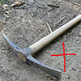

A real bandaid fix. Works for my singleplayer purposes anyhow. I got tired of breaking picks by accident while digging this really big hole so I just cranked tool durability to the maximum int value possible. No dl cuz there are much better versions of the same thing elsewhere